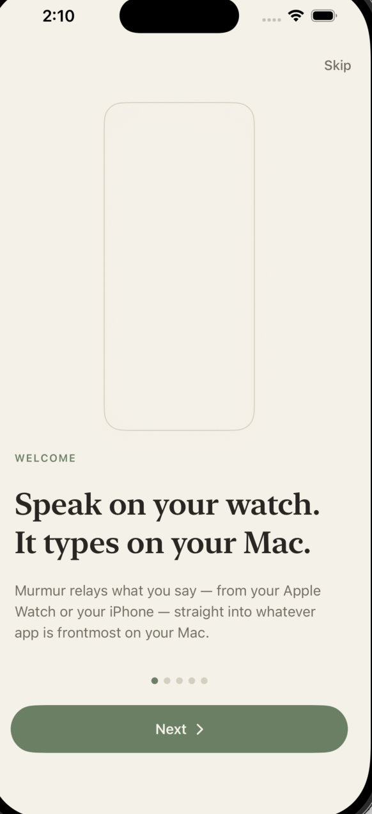
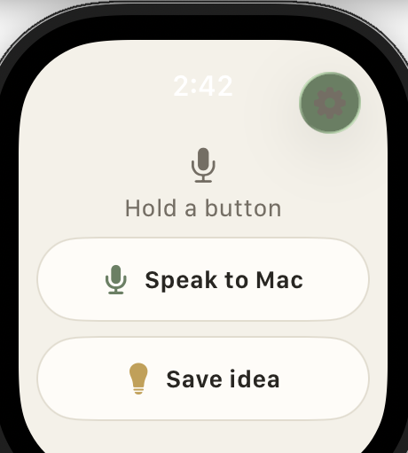

Local
·
Offline-first
Speak on your watch.
It types on your Mac.
Dictate from your Apple Watch or iPhone and the transcript appears in whatever app is frontmost on your Mac. Transcription happens locally — no cloud, no subscriptions.
Available for Mac

